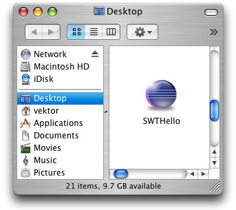

Deploying SWT Applications on Mac OS X
Under Mac OS X, applications are stored in an application bundle, which is simply a directory containing the executable and any associated resources for an application. An application bundle has the extension .app and appears as a single file in the Finder.
These application bundles are usually distributed inside compressed disk images with the extension .dmg. Disk images are automatically mounted on download, presenting the user with the bundle icon so it can be dragged to their Applications folder. More information on application bundles and disk images can be found in Apple documentation.
| Download SWTHello (1.4MB) |
SWTHello.dmg is a disk image of a simple SWT Hello World application.
What's in the .app directory
The SWTHello.app directory contains the following files:
| SWTHello.app/Contents/Info.plist SWTHello.app/Contents/Resources/swthello.icns SWTHello.app/Contents/MacOS/swthello SWTHello.app/Contents/MacOS/SWTHello.class SWTHello.app/Contents/MacOS/swt/libswt-*.jnilib SWTHello.app/Contents/MacOS/swt/swt.jar |
Info.plist is an XML file describing the application name and description, vendor, icon, and executable to run. The Property List Editor application can be used to edit this file. The .icns file is our icon, and swthello is a small shell script. The SWT .jar and .jnilib files are from the Mac OS X download of SWT from the SWT homepage.
Launching the application
In the SWTHello example, a small shell script is used as the executable to run. This allows us to easily launch Java with any required options.
#!/bin/sh
BASEDIR=`dirname $0`
exec java \
-d64 \
-XstartOnFirstThread \
-classpath $BASEDIR/swt/swt.jar:$BASEDIR \
SWTHello
|
(NOTE: If you are using eclipse 3.2.2 or earlier, you also need
-Djava.library.path=..)
The shell script launches java with the required classpath and Java
library path settings to use SWT. The -d64 switch ensures
that the 64-bit JVM is used; if swt.jar contains either the Carbon or
32-bit Cocoa port of SWT then -d32 should be specified instead.
The special VM option -XstartOnFirstThread
is also required for SWT applications to run properly on the Mac.
Creating a disk image
Disk images can be created on the command line using hdiutil or graphically using the Disk Utility application.
| hdiutil create -srcfolder SWTHello SWTHello.dmg hdiutil internet-enable -yes SWTHello.dmg |
A DMG file can optionally be "internet-enabled", which streamlines the installation process, automatically mounting and copying the application to the Desktop.
Now that wasn't so bad, was it?